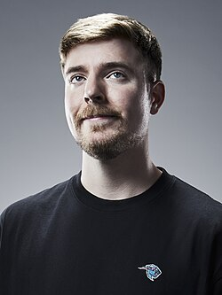

About Founder

About the Founder - Mr. Beast
Early Life
Jimmy Donaldson, known as the Youtuber MrBeast, started his channel in 2012. MrBeast's rise to fame began in 2017 when he began posting videos of stunts. It was at this point that he began giving away his earnings from Youtube in his videos, which significantly increased his rise in popularity.
Today
MrBeast is currently the most subsribed to channel on Youtube, having more that 471 million subscribers. Jimmy has used his platform to host large projects like a recreation of Squid Games and the reality competition searies Beast Games, release products like Feastables, and most importantly create philanthropic projects like Team Trees, Team Seas, Team Water, and the organization Beast Philanthropy.